🗿 Lesson 28: Sculpting Basics
Transform Blender into a digital clay studio. Learn sculpting tools, brushes, and workflows to create organic 3D models with artistic freedom. No polygon modeling required—just shape and form.
🎯 What You'll Learn
- Sculpting fundamentals: Digital clay manipulation vs. polygon modeling
- Sculpt Mode: Interface, navigation, and essential settings
- Brush system: Push, pull, smooth, grab, and specialized sculpting tools
- Mesh resolution: Dynamic topology, multiresolution, and remeshing
- Sculpting workflow: From rough forms to detailed surfaces
- Project: Sculpt a complete organic object (rock, creature head, or simple character)
⏱️ Estimated time: 90-120 minutes
🎨 Project: Create a detailed sculpted object showcasing major brush techniques
In This Lesson
🎨 What Is Digital Sculpting?
Digital sculpting is fundamentally different from polygon modeling. Instead of carefully placing vertices and edges, you manipulate mesh surfaces like clay—pushing, pulling, smoothing, and carving to create organic forms. It's intuitive, artistic, and extraordinarily powerful for certain types of 3D models.
The Clay Metaphor
🏺 Working with Digital Clay
Think of sculpting like working with real clay:
- Push into surface: Create indentations and creases
- Pull out material: Add volume and forms
- Smooth surface: Blend and refine transitions
- Carve details: Add fine surface features
- Add/remove clay: Build up or cut away forms
But with superpowers traditional clay doesn't have:
- Undo/redo: Infinite corrections
- Non-destructive: Save every stage of your work
- Symmetry: Perfect mirrored sculpting
- Layers: Separate detail passes
- Dynamic detail: Add geometry only where needed
- No mess: No cleanup, no drying time, no firing
The core experience:
- Move brush over surface → surface responds
- More pressure → stronger effect
- Smaller brush → finer detail
- Different brushes → different effects
- Feels organic and immediate
How Sculpting Works Technically
🔧 Under the Hood
What happens when you sculpt:
- Start with mesh (cube, sphere, plane, etc.)
- Mesh has vertices (like polygon modeling)
- Sculpting brushes move these vertices
- But you don't see vertices—you see smooth surface
- More vertices = smoother, more detailed surface
Key technical concept—resolution:
- High resolution (lots of vertices) = fine detail possible
- Low resolution (few vertices) = only large forms possible
- Like pixel resolution in images: more pixels = sharper image
- Blender can add vertices as you sculpt (dynamic topology)
- Or use fixed subdivisions (multiresolution modifier)
Sculpting is geometry manipulation:
- Not creating new mesh—reshaping existing mesh
- Brushes modify vertex positions (and sometimes add/remove vertices)
- Surface updates in real-time as you work
- All changes stored as vertex position data
The Sculpting Mindset
🧠 Thinking Like a Sculptor
Different mental approach than polygon modeling:
- Big to small: Start with rough masses, add detail progressively
- Additive and subtractive: Build up and carve away
- Gestural: Loose, fluid movements at first
- Iterative: Constantly refining and adjusting
- Intuitive: Less technical thinking, more artistic feeling
Traditional sculpting principles apply:
- Form before detail: Get big shapes right first
- Anatomy matters: Understand structure underneath
- Gesture and flow: Create dynamic, interesting shapes
- Planes and surfaces: Think about how light hits forms
- Reference is essential: Study real objects constantly
You don't need to be a traditional sculptor:
- Digital sculpting is more forgiving
- Unlimited undo removes fear of mistakes
- Tools help you achieve results faster
- But understanding sculpture principles accelerates learning
💡 The Liberation of Sculpting: If polygon modeling feels like architecture—precise, measured, technical—then sculpting feels like painting or drawing. It's expressive. You can be loose. You can explore. You're not counting edge loops or worrying about topology (at least not initially). You're just shaping forms. For many artists, this is the unlock moment in 3D. The point where it stops feeling like technical work and starts feeling like art. Not everyone prefers sculpting (some love the precision of polygon modeling), but everyone should try it. Because sculpting teaches you to see form differently.
⚖️ Sculpting vs. Polygon Modeling
Understanding when to sculpt versus when to polygon model is crucial. Each approach has strengths and ideal use cases. Often, professional workflows combine both methods in a single project.
Key Differences
📊 Method Comparison
| Aspect | Polygon Modeling | Sculpting |
|---|---|---|
| Approach | Vertex-by-vertex precision | Freeform surface manipulation |
| Feel | Technical, architectural | Artistic, organic |
| Control | Exact, measurable | Fluid, gestural |
| Best for | Hard surfaces, mechanical objects | Organic forms, characters, creatures |
| Topology | Clean, controlled from start | Messy initially, cleaned later |
| Detail level | Depends on subdivision | Unlimited (add geometry as needed) |
| Learning curve | Steeper (many tools/concepts) | Gentler (intuitive interaction) |
| Performance | Lightweight models | Heavy models (millions of polygons) |
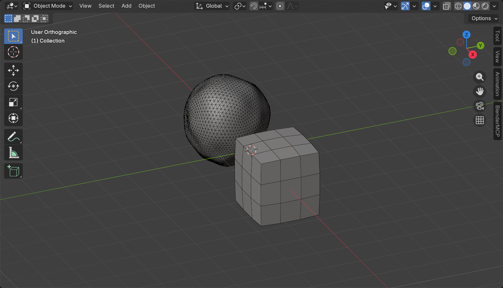
Strengths and Weaknesses
✅ Polygon Modeling Excels At
- Hard surface objects: Furniture, buildings, vehicles, weapons
- Precise dimensions: When measurements matter
- Clean topology: Models ready for animation or games
- Modifiers: Array, mirror, bevel work better with polygon modeling
- Low-poly modeling: Game assets, optimization
- Architectural/CAD work: Technical accuracy needed
❌ Polygon modeling struggles with:
- Complex organic surfaces (faces, muscles, creatures)
- Fine surface details (pores, wrinkles, scales)
- Gestural, artistic exploration
- Speed when creating characters
✅ Sculpting Excels At
- Character creation: Faces, bodies, creatures
- Organic forms: Rocks, plants, terrain, natural objects
- Surface detail: Wrinkles, pores, scales, fabric texture
- Artistic exploration: Trying different forms quickly
- High-detail models: Film-quality assets with millions of polygons
- Concept sculpting: Designing characters and creatures
❌ Sculpting struggles with:
- Hard edges and precise angles
- Mechanical objects with flat surfaces
- Low-poly requirements (game engines)
- Exact measurements and dimensions
- Creating topology suitable for animation (requires retopology)
Combined Workflows
🔄 Best of Both Worlds
Professional workflow often combines both methods:
Character creation workflow:
- Block out form: Polygon modeling for basic body shape
- Sculpt details: Add muscles, wrinkles, facial features
- Retopology: Create clean mesh over sculpt
- Bake details: Transfer sculpted detail to low-poly via normal maps
- Rig and animate: Use clean mesh with baked details
Environment asset workflow:
- Sculpt hero assets: Rocks, trees, organic elements
- Model structures: Buildings, props, mechanical objects
- Combine in scene: Sculpted organics + modeled hard surface
- Detail pass: Add sculpted surface detail where needed
The key insight:
- Don't think "sculpting OR polygon modeling"
- Think "sculpting AND polygon modeling"
- Use each method where it's strongest
- Transition between methods as needed
- Final asset may combine both approaches
💡 Choose Your Tool Wisely: Beginner mistake: trying to sculpt a car or model a face with polygon modeling. Use the right tool for the job. Sculpting a character? Start in Sculpt Mode. Modeling a spaceship? Stay in Edit Mode. Building a game prop? Polygon model it, then sculpt surface details. Creating a film-quality creature? Sculpt first, retopo later. The more you understand each method's strengths, the better your workflow decisions become. And the faster you work.
🤔 When to Use Sculpting
Making the right choice between sculpting and polygon modeling saves enormous time and frustration. Here's a practical decision framework based on what you're creating and what matters most in your project.
Decision Framework
🎯 Quick Decision Guide
Choose sculpting if:
- ✅ Creating characters, creatures, or organic objects
- ✅ Need fine surface detail (pores, wrinkles, texture)
- ✅ Exploring forms and designs (concept phase)
- ✅ Topology doesn't matter yet (film, illustration, concept art)
- ✅ Want natural, irregular surfaces
- ✅ Need high-resolution detail (millions of polygons okay)
- ✅ Feel more comfortable with artistic/gestural approach
Choose polygon modeling if:
- ✅ Creating hard-surface objects (vehicles, weapons, furniture)
- ✅ Need precise dimensions and measurements
- ✅ Creating game-ready assets (low poly requirement)
- ✅ Want clean topology from the start
- ✅ Building architectural or mechanical objects
- ✅ Need sharp edges and flat surfaces
- ✅ Working with modifiers (arrays, mirrors, bevels)
Use both methods if:
- ✅ Creating characters for games (model base, sculpt detail, retopo)
- ✅ Building environments (model structures, sculpt organic elements)
- ✅ Making props with surface detail (model form, sculpt wear/damage)
- ✅ Want best results regardless of method
Common Use Cases
🎭 Character Creation
Perfect for sculpting:
- Faces (complex anatomy, subtle details)
- Bodies (muscles, proportions, natural forms)
- Creatures (fantastical designs, organic shapes)
- Clothing details (wrinkles, folds, fabric texture)
Why sculpting wins here: Facial features require millions of polygons for realistic detail. Creating that with polygon modeling is tedious. Sculpting lets you shape organically and add detail where needed.
🌍 Environment Assets
Sculpt these elements:
- Rocks and cliffs: Natural, irregular surfaces
- Trees and plants: Organic, varied forms
- Terrain: Hills, mountains, natural landscape
- Organic debris: Fallen logs, roots, natural objects
Model these elements:
- Buildings and structures
- Walls and fences
- Props and furniture
- Mechanical objects
🗡️ Props and Objects
Use combined workflow:
- Model base form: Basic sword shape using polygon modeling
- Sculpt surface detail: Scratches, dents, wear patterns
- Add decorative elements: Engravings, reliefs, ornate details
- Bake to low-poly: Capture detail in textures for game use
This gives you precision where needed (blade edges, hard surfaces) and organic detail where it enhances realism (weathering, battle damage).
Project Requirements
📋 What Determines Your Choice
For games (real-time engines):
- Final asset needs low polygon count
- Workflow: Sculpt high-poly → Retopology → Bake details to normal map
- Sculpting creates detail, retopology creates usable mesh
- Best of both worlds: sculpted quality, optimized performance
For film/rendering (offline):
- Polygon count less critical (no real-time requirement)
- Can use multi-million polygon sculpts directly
- Subdivision surface for smooth results
- Focus on visual quality over optimization
For 3D printing:
- Need watertight mesh (no holes, proper thickness)
- Sculpting great for organic designs
- Must export at appropriate resolution
- May need cleanup after sculpting
For concept/illustration:
- Sculpting fastest for exploring forms
- Topology doesn't matter (not animating)
- Can push detail extremely high
- Render from any angle without retopology
⚠️ Common Beginner Mistakes
Mistake 1: Sculpting mechanical objects
- Trying to sculpt a car or weapon from scratch
- Hard edges and flat surfaces don't sculpt well
- Use polygon modeling for base, sculpt details only
Mistake 2: Polygon modeling organic detail
- Trying to model facial wrinkles vertex-by-vertex
- Creating muscles with manual edge loops
- Switch to sculpting—it's 100x faster
Mistake 3: Not planning for retopology
- Sculpting game character to millions of polygons
- Then discovering it's unusable in game engine
- Solution: Always plan workflow from start to finish
Mistake 4: Using wrong tool stubbornly
- Sticking with familiar method even when wrong choice
- Spending hours fighting the tool
- Be flexible—switch methods when needed
💡 The Right Tool for the Right Job: Professional 3D artists don't ask "Should I sculpt or polygon model?" They ask "What's the fastest way to get the result I need?" Sometimes that's pure sculpting. Sometimes pure polygon modeling. Often it's both. The real skill isn't mastering one method—it's knowing when to use each, and how to combine them effectively. Learn both. Use both. Let the project requirements guide your choice, not your personal preference.
🖥️ Sculpt Mode Interface
Sculpt Mode transforms Blender into a digital sculpting studio. The interface adapts to give you brush-focused tools and sculpting-specific controls. Understanding this interface is your foundation for everything that follows.
Entering Sculpt Mode
🚪 Getting Started
Method 1: Mode dropdown
- Select a mesh object (cube, sphere, etc.)
- Top-left corner: Mode dropdown (currently "Object Mode")
- Click dropdown → Select "Sculpt Mode"
- Interface transforms to sculpting tools
Method 2: Keyboard shortcut
- Select mesh object
- Press
Ctrl+Tab→ Pie menu appears - Select "Sculpt Mode" from pie menu
- Quick switching between modes
What changes when you enter Sculpt Mode:
- Cursor becomes circular brush
- Toolbar changes to brush icons
- Top header shows brush settings
- Right sidebar (N-panel) shows sculpting tools
- Object becomes sculptable surface
Quick start test:
- Default scene with cube
- Switch to Sculpt Mode
- Click and drag on cube surface
- See it deform immediately
- Congratulations—you just sculpted!
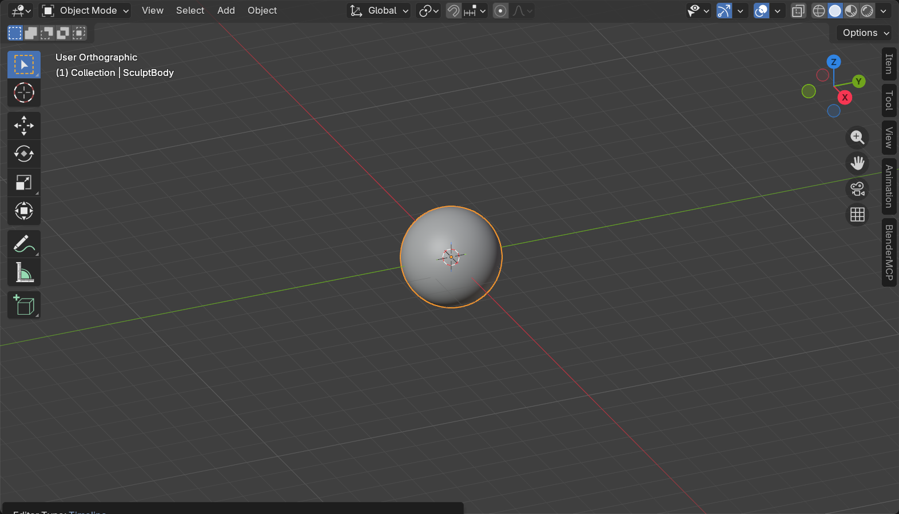
Interface Layout
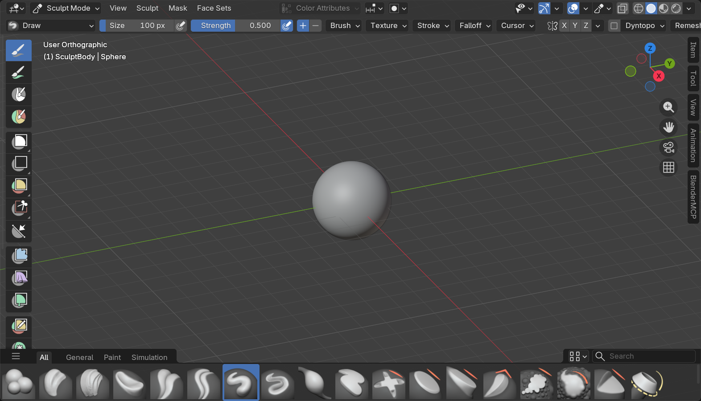
🗺️ Navigating the Sculpt Interface
Toolbar (left side):
- Brush icons: Each icon is different sculpting tool
- Draw brush: Default, most commonly used
- Grab, Smooth, Inflate: Other essential brushes
- Click icon to switch active brush
- Or use keyboard shortcuts (we'll cover these)
Top header:
- Brush settings: Size, strength, falloff
- Symmetry options: Mirror sculpting across axes
- Stroke method: How brush applies (dots, line, etc.)
- Texture: Add surface pattern to brush
- Most frequently adjusted settings here
Right sidebar (N-panel):
- Press
Nto toggle visibility - Tool tab: Detailed brush settings
- Brush tab: Brush management and library
- Texture tab: Brush texture settings
- More detailed control than header
Properties panel (bottom-right):
- Active Tool: Current brush properties
- Modifier Properties: Add Multiresolution, etc.
- Object Data Properties: Mesh settings
- Context-sensitive to active operation
Essential Settings and Options
⚙️ Important Controls
Brush radius (size):
- Controls how large your brush affects surface
- Shortcut:
F+ move mouse (interactive resize) - Or header: Radius slider
- Or brackets:
[decrease,]increase - Large brush = broad changes, small brush = fine detail
Brush strength:
- Controls how intensely brush affects surface
- Shortcut:
Shift+F+ move mouse - Or header: Strength slider (0.0 to 1.0)
- Lower strength = subtle changes, gradual buildup
- Higher strength = dramatic changes, faster work
Symmetry:
- Mirror sculpting across X, Y, or Z axis
- Header: X, Y, Z checkboxes
- Most common: X-axis symmetry (left/right)
- Sculpt one side, other side mirrors automatically
- Essential for characters and symmetrical objects
Smooth shading:
- Right-click mesh → Shade Smooth
- Makes surface appear smooth rather than faceted
- Critical for seeing sculpted forms correctly
- Always use smooth shading when sculpting
Matcap shading:
- Viewport shading icon (top-right) → Solid mode
- Enable "Matcap" in shading dropdown
- Choose matcap that shows form clearly
- Clay or basic gray work well
- Makes surface detail more visible
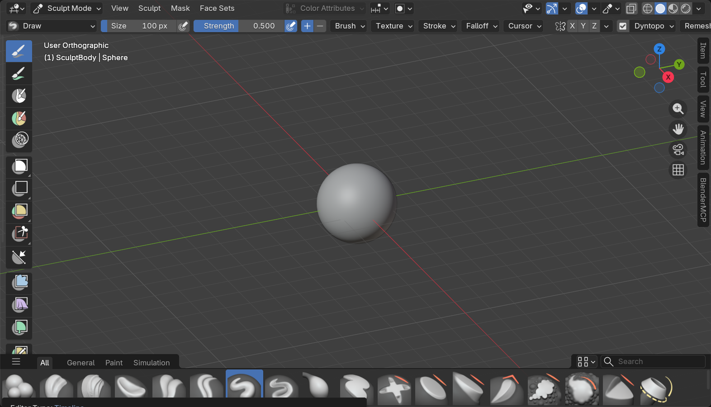
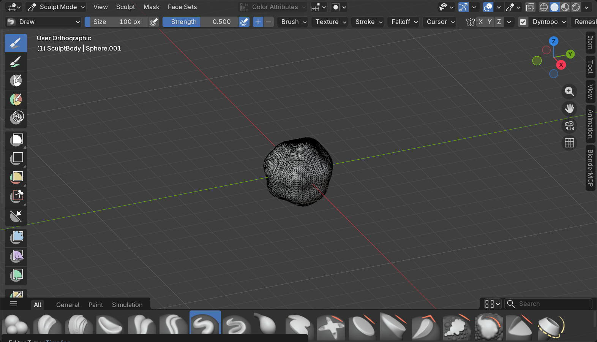
Navigation in Sculpt Mode
🧭 Moving Around Your Sculpt
Same navigation as other modes:
- Rotate view: Middle mouse button + drag
- Pan view:
Shift+ middle mouse + drag - Zoom: Scroll wheel
- Frame selected: Numpad
.or View menu → Frame Selected
Sculpting-specific navigation:
- Sculpting doesn't change navigation
- But you'll rotate view constantly while sculpting
- Work from all angles—don't stay in one view
- Frequent rotation prevents flat, boring forms
Focus and detail work:
- Zoom in close for fine detail
- Zoom out to check overall form
- Constantly switch between close-up and distant views
- Prevents "overworking" small areas
Basic Sculpting Interaction
🖱️ How to Sculpt
Basic sculpting action:
- Position brush: Hover cursor over surface
- Click and drag: Left mouse button + move
- Surface deforms: Follows brush as you move
- Release: Stroke complete
Brush behavior modifiers:
- Normal sculpting: Left click + drag (pushes out)
- Inverted:
Ctrl+ left click + drag (pushes in) - Smooth:
Shift+ left click + drag (smooths surface) - These work with most brushes
Try it now:
- Start Blender with default cube
- Enter Sculpt Mode
- Right-click cube → Shade Smooth
- Click and drag on surface (creates bump)
Ctrl+ click and drag (creates indent)Shift+ click and drag (smooths surface)- Experiment freely—undo with
Ctrl+Z
Important realization:
- Sculpting is immediate and responsive
- No complex tools or settings needed to start
- Click and drag = results
- This is why sculpting feels intuitive
⚠️ Common Early Confusion
"Nothing happens when I sculpt"
- Check you're in Sculpt Mode (not Edit or Object Mode)
- Check mesh is selected (highlighted in viewport)
- Try increasing brush strength (might be too low)
- Check mesh has enough geometry (cube needs subdivision)
"Surface looks faceted/blocky"
- Right-click mesh → Shade Smooth
- Smooth shading is almost always needed
- Faceted shading hides sculpted detail
"Can't see detail in my sculpt"
- Change viewport shading to Solid with Matcap
- Matcap shows form better than flat shading
- Try different matcaps until one shows detail clearly
"Brush is too big/small/weak/strong"
- Press
Fto adjust size interactively - Press
Shift+Fto adjust strength interactively - These shortcuts are essential—memorize them
💡 The Sculpting Workspace: Blender's Sculpt Mode interface is optimized for one thing: getting out of your way. Most tools accessible via shortcuts. Brush visible at all times. Surface updates in real-time. Everything designed to keep you focused on sculpting, not hunting through menus. As you learn shortcuts (
Ffor size,Shift+Ffor strength,Shiftfor smooth), you'll find yourself barely touching the interface. Just sculpting. Which is exactly how it should be. The interface should feel invisible. The sculpture should feel immediate.
🖌️ Essential Sculpting Brushes
Blender provides dozens of sculpting brushes, but you'll spend 90% of your time using about eight core brushes. Master these fundamentals before exploring specialty brushes. Each brush has a distinct purpose and feel—like different tools in a traditional sculptor's toolkit.
The Core Eight Brushes
🎨 Your Primary Toolkit
These eight brushes handle almost all sculpting tasks:
- Draw: Standard brush, pushes surface out
- Draw Sharp: Creates hard edges and creases
- Clay Strips: Builds up flat planes of material
- Grab: Moves geometry like grabbing clay
- Smooth: Blends and softens surfaces
- Crease: Creates sharp indentations
- Inflate: Expands surface outward evenly
- Scrape: Flattens and levels surfaces
Learn these first. Specialty brushes come later.
Draw Brush
✏️ The Workhorse Brush
What it does:
- Pushes surface outward (or inward with
Ctrl) - Smooth, rounded strokes
- Most versatile brush—use for general sculpting
- Good for building forms, adding volume
- Default active brush when entering Sculpt Mode
Best uses:
- Building up muscles and organic forms
- Adding volume to areas
- General form refinement
- Creating gentle curves and transitions
- Sketching out basic shapes
Tips for using Draw brush:
- Lower strength: Better control, build up gradually
- Multiple passes: Several light strokes better than one heavy stroke
- Vary size: Large for big forms, small for details
- Invert frequently:
Ctrlto push in, create depth - Rotate view: Work from different angles constantly
Common mistakes:
- Too much strength—creates lumpy, bumpy surface
- Not enough variation—boring, uniform surface
- Working from one angle—flat, unconvincing forms
Shortcut: Press X to switch to Draw brush quickly
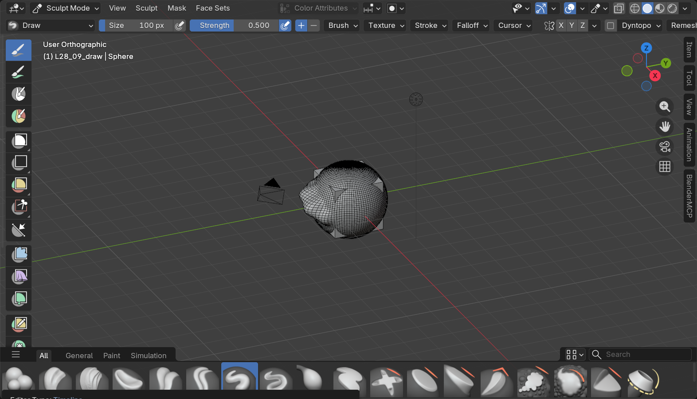
Grab Brush
✊ The Clay Grabber
What it does:
- Grabs geometry and moves it in space
- Like physically grabbing and pulling clay
- Doesn't add or remove material—just repositions
- Large-scale form manipulation
- Creates dramatic shape changes quickly
Best uses:
- Repositioning large forms (move nose, adjust cheekbone)
- Stretching and pulling surfaces
- Creating gesture and flow in poses
- Rough blocking of major forms
- Fixing proportions (make head bigger, arm longer)
How Grab brush works differently:
- Click and drag—geometry follows cursor
- No continuous stroke like Draw
- Single motion per click
- All geometry in brush radius moves together
- Creates smooth, unified movement
Tips for using Grab brush:
- Large radius: Move bigger areas smoothly
- Small radius: Precise local adjustments
- Quick gestures: Don't overthink, just pull and adjust
- Combine with Draw: Grab for form, Draw for detail
- Use early: Block major forms with Grab before adding detail
Shortcut: Press G to switch to Grab brush
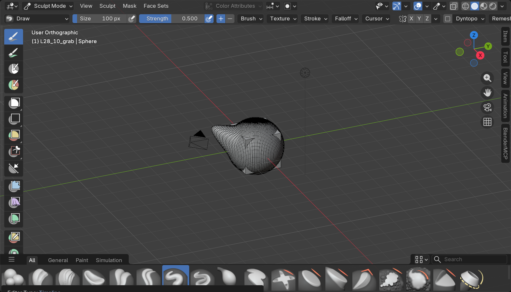
Smooth Brush
🌊 The Surface Smoother
What it does:
- Averages vertices to create smooth transitions
- Removes bumps, lumps, and harsh details
- Blends areas together
- Softens hard edges
- Essential cleanup tool
Best uses:
- Blending between hard and soft areas
- Removing unwanted texture or noise
- Cleaning up messy sculpting
- Creating gradual transitions
- Softening overly detailed areas
Critical shortcut:
- Hold
Shift: Temporarily activates Smooth brush - Works with ANY active brush
- Most frequently used shortcut in sculpting
- Don't need to switch brushes—just hold Shift
- Release Shift—back to previous brush
Smooth brush workflow:
- Sculpt with Draw brush (adds detail)
- Hold
Shift(temporarily Smooth) - Smooth over rough areas
- Release
Shift(back to Draw) - Continue sculpting
- Repeat constantly throughout sculpting
Smooth strength considerations:
- Low strength: Subtle smoothing, preserves detail
- High strength: Aggressive smoothing, removes detail
- Start low, increase if needed
- Over-smoothing destroys your work
- Multiple light passes better than one heavy pass
When NOT to smooth:
- Don't smooth sharp edges you want to keep (creases, wrinkles)
- Don't smooth away all texture (creates boring surface)
- Don't smooth excessively (loses character and life)
Shortcut: Press S to switch to Smooth brush (or hold Shift temporarily)
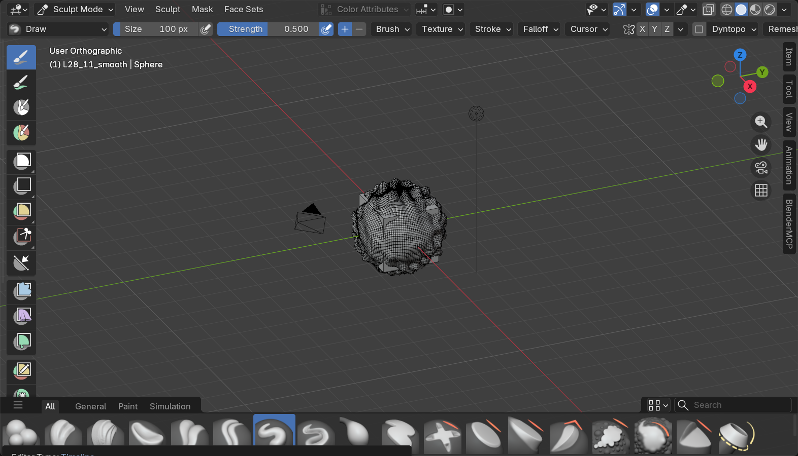
Shift) does.Clay Strips Brush
🧱 The Form Builder
What it does:
- Builds up flat, planar surfaces
- Creates clay-like ribbons of material
- Excellent for blocking large forms
- More controlled than Draw brush
- Popular for speed sculpting
Best uses:
- Initial form blocking (rough head shape, body masses)
- Building up anatomy (muscles, bone structure)
- Creating planes and facets (sculpting technique)
- Adding volume quickly
- Establishing major forms before details
Why professionals love Clay Strips:
- Faster than Draw for building forms
- Creates more controlled, planar surfaces
- Works well with low brush strength
- Naturally creates planes that show form
- Less "blobby" than Draw brush
Clay Strips technique:
- Start with low strength (0.3-0.5)
- Make long, confident strokes
- Build up layers gradually
- Think in planes, not curves
- Smooth between passes with
Shift - Creates structured, strong forms
Comparison with Draw brush:
- Draw: Soft, rounded, organic
- Clay Strips: Structured, planar, deliberate
- Use both—they complement each other
- Clay Strips for structure, Draw for refinement
Shortcut: Press C to switch to Clay Strips brush
Crease Brush
📏 The Line Maker
What it does:
- Creates sharp indentations in surface
- Makes lines and creases
- Opposite of Inflate
- Pinches geometry inward
- Good for wrinkles, folds, definition lines
Best uses:
- Wrinkles and skin folds
- Defining edges between forms
- Creating fabric creases in clothing
- Adding character lines in faces
- Surface detail and texture
Crease brush behavior:
- Pulls geometry inward along stroke
- Creates sharp valley in surface
- Can be smoothed afterward for softer crease
- Works best with light strength
- Too strong = unnatural, harsh lines
Tips for using Crease:
- Low strength: Build up creases gradually
- Smooth afterward: Soften harsh lines
- Vary depth: Not all creases equal depth
- Follow anatomy: Wrinkles follow muscle/bone structure
- Don't overuse: Too many creases = busy surface
Inverted Crease (Ctrl):
- Pushes outward instead of inward
- Creates raised lines (like welding seams)
- Good for decorative elements
- Armor details, mechanical features
Inflate Brush
🎈 The Volume Expander
What it does:
- Expands surface outward evenly in all directions
- Like inflating a balloon
- Doesn't create directional bumps
- Uniform expansion from center
- Opposite of Crease brush
Best uses:
- Adding volume to areas (cheeks, muscles)
- Creating rounded forms
- Puffing up surfaces
- Making things look fuller or fatter
- Organic swelling effects
Inflate vs. Draw:
- Draw: Pushes in direction of stroke
- Inflate: Expands perpendicular to surface
- Inflate creates more uniform, balloon-like forms
- Draw creates directional, sculpted forms
- Use Inflate when direction doesn't matter
Inverted Inflate (Deflate with Ctrl):
- Contracts surface inward evenly
- Like deflating balloon
- Good for creating indentations
- Hollows and depressions
Tips for Inflate brush:
- Best with moderate to low strength
- Creates very smooth, uniform expansion
- Good for bulging muscles
- Use Draw brush when you need directional control
- Combine with Smooth for organic results
Draw Sharp Brush
🔪 The Edge Creator
What it does:
- Like Draw brush but creates harder edges
- Pushes surface out with less falloff
- Creates more defined, crisp forms
- Between Draw and Crease in sharpness
- Good for harder organic forms
Best uses:
- Scales and armor plates
- Sharp anatomy (cheekbones, jaw)
- Stylized characters (angular forms)
- Surface detail with definition
- Mechanical-organic hybrids
When to use Draw vs. Draw Sharp:
- Draw: Soft, organic, natural forms
- Draw Sharp: Defined, stylized, harder forms
- Draw Sharp = more character and definition
- Draw = more natural and soft
- Switch between based on desired feel
Tips for Draw Sharp:
- Great for stylized art styles
- Can always smooth afterward if too sharp
- Good for initial blocking (clear forms)
- Creates more dynamic silhouettes
- Use lower strength for control
Scrape Brush
🔨 The Flattener
What it does:
- Pushes high points down to average level
- Flattens and levels surfaces
- Like scraping excess clay off
- Creates flat planes
- Good for cleanup and refinement
Best uses:
- Creating flat surfaces (planes)
- Cleanup of lumpy areas
- Defining flat forms in anatomy
- Architectural sculpting details
- Creating hard-surface feel in organic sculpts
Scrape technique:
- Drag across high points
- High areas get pushed down
- Creates flatter, more planar surface
- Good for establishing planes of form
- Often used with Clay Strips workflow
Inverted Scrape (Ctrl):
- Fills in low points instead
- Raises valleys to average level
- Good for filling gaps
- Cleanup tool
Brush Quick Reference
⌨️ Essential Brush Shortcuts
X- Draw brush (workhorse)G- Grab brush (move forms)S- Smooth brush (or holdShifttemporarily)C- Clay Strips brush (form building)F- Adjust brush size (move mouse)Shift+F- Adjust brush strength (move mouse)Ctrl- Invert brush (push becomes pull)Shift- Temporary smooth (most used shortcut)
Memorize these—they're your foundation.
💡 Master the Basics Before Exploring: Blender has 30+ sculpting brushes. Ignore most of them initially. The eight brushes covered here—Draw, Grab, Smooth, Clay Strips, Crease, Inflate, Draw Sharp, Scrape—handle 95% of sculpting tasks. Master these first. Understand when to use each. Learn the shortcuts. Get comfortable switching between them fluidly. Only then explore specialty brushes. Most professional sculptors use the same core brushes 90% of the time. Not because they don't know the others. Because these core brushes are powerful enough to do almost anything. More brushes don't make you better. Better use of essential brushes makes you better.
🔬 Understanding Mesh Resolution
Mesh resolution is the single most important technical concept in sculpting. It determines how much detail you can create and how smooth your surfaces can be. Understanding resolution management separates frustrating sculpting experiences from productive ones.
What Is Mesh Resolution?
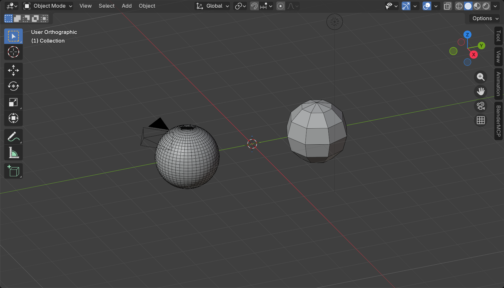
📊 The Detail Limit
Resolution defined:
- Number of vertices (points) in your mesh
- More vertices = higher resolution = more detail possible
- Fewer vertices = lower resolution = only large forms possible
- Like pixels in image: more pixels = sharper image
- Same principle in 3D: more vertices = smoother surface
Why resolution matters:
- Too low: Can't add detail, surface looks faceted
- Too high: Performance suffers, Blender slows down
- Just right: Enough detail for current work, good performance
- Resolution needs change as you work (start low, increase gradually)
Visual example:
- Default cube: 8 vertices (corners only)
- Can't sculpt detail—not enough geometry
- Subdivide once: 26 vertices (better, but still limited)
- Subdivide 3 times: 1,538 vertices (good for sculpting)
- Subdivide 5 times: ~100,000 vertices (high detail possible)
The resolution challenge:
- Start with low resolution (cube: 8 vertices)
- Need more resolution to sculpt details
- But how do you add resolution intelligently?
- Three methods: Dynamic Topology, Multiresolution, Remeshing
Method 1: Dynamic Topology (Dyntopo)
⚡ Automatic Resolution Management
What Dynamic Topology does:
- Adds geometry automatically as you sculpt
- More detail needed? Dyntopo adds vertices on the fly
- Less detail needed? Dyntopo removes excess vertices
- Hands-free resolution management
- Just sculpt—Dyntopo handles geometry
Enabling Dynamic Topology:
- Enter Sculpt Mode
- Header (top): Find "Dynamic Topology" section
- Check the box or press
Ctrl+D - Icon appears in header (wireframe cube icon)
- Now sculpting automatically adds/removes geometry
Dyntopo settings:
- Detail Size: How small triangles get (lower = more detail)
- Start at 12-20 (moderate detail)
- Decrease to 5-8 for fine detail
- Increase to 30-50 for rough blocking
- Detail Type: Relative or Constant
- Relative: Detail based on view (zoom affects detail)
- Constant: Fixed detail regardless of view
- Relative is default and usually best
Advantages of Dyntopo:
- ✅ Beginner-friendly (automatic)
- ✅ No pre-planning needed
- ✅ Just start sculpting on any mesh
- ✅ Detail only where needed
- ✅ Great for organic, freeform sculpting
Disadvantages of Dyntopo:
- ❌ Creates triangles (not quads—messy topology)
- ❌ Can't use Multiresolution modifier
- ❌ Harder to control exact resolution
- ❌ Not ideal for animation-ready topology
- ❌ Need to remesh or retopo afterward for production
Best uses for Dyntopo:
- Concept sculpting (exploring forms)
- Creating sculpts for normal map baking
- 3D printing models
- Illustrations and still renders
- Learning sculpting (removes technical barriers)
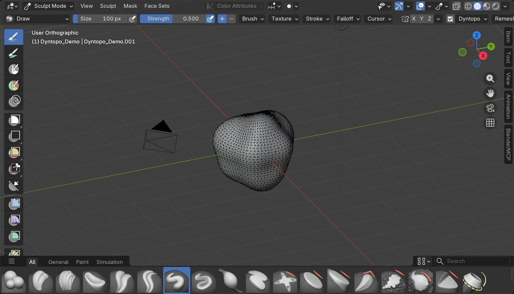
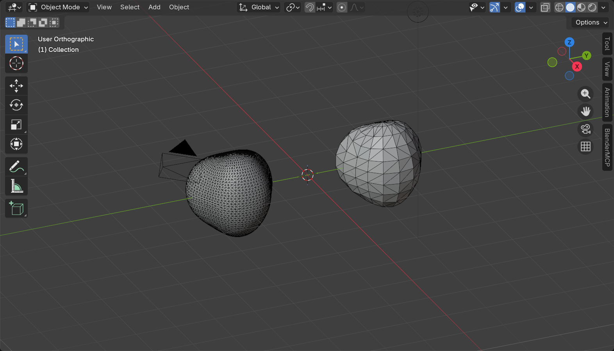
Method 2: Multiresolution Modifier
📊 Controlled Subdivision Levels
What Multiresolution does:
- Subdivides mesh in controlled levels
- Level 0: Base mesh (low poly)
- Level 1: Subdivided once
- Level 2: Subdivided again (4x geometry of Level 1)
- Can sculpt at any level, detail transfers correctly
- Non-destructive—can go back to base mesh
Setting up Multiresolution:
- Start with clean base mesh (quad topology)
- Enter Sculpt Mode
- Modifier Properties panel (wrench icon)
- Add Modifier → Multiresolution
- Click "Subdivide" 2-3 times (adds levels)
- Now have multiple resolution levels
Using Multiresolution levels:
- Level 0 (base): Rough forms, major shapes
- Low poly, fast performance
- Establish proportions and big forms
- Block out character or creature
- Level 1-2 (medium): Secondary forms
- Add muscle groups
- Refine anatomy
- Define major surface features
- Level 3-4 (high): Fine details
- Wrinkles, pores, scales
- Surface texture
- Final polish
Multiresolution workflow:
- Start at Level 0 or 1—rough forms
- Increase level when need more detail
- Sculpt current level
- Drop back to lower level if forms need adjustment
- Gradually work up to highest level for final details
- Can always go back down—non-destructive
Advantages of Multiresolution:
- ✅ Clean quad topology (good for animation)
- ✅ Non-destructive (edit any level anytime)
- ✅ Controlled resolution (you decide when to add detail)
- ✅ Can export base mesh (low poly for games)
- ✅ Professional workflow standard
Disadvantages of Multiresolution:
- ❌ Requires good starting topology
- ❌ Resolution uniform across mesh (can't vary locally)
- ❌ More planning required
- ❌ Steeper learning curve
Best uses for Multiresolution:
- Game character creation (need base mesh)
- Animation-ready models
- Professional production pipelines
- When clean topology matters
- Sculpting over polygon-modeled base
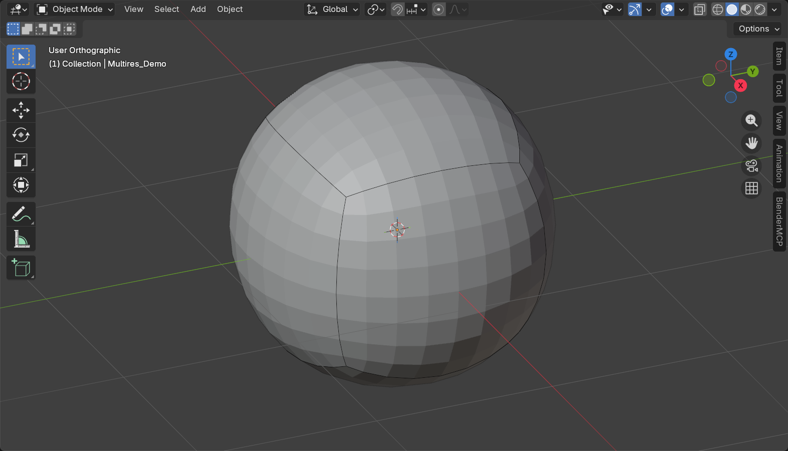
Method 3: Remeshing
🔄 Topology Reset
What Remeshing does:
- Rebuilds mesh with new, even topology
- Takes existing sculpt and creates clean mesh
- Uniform resolution across surface
- Fixes messy topology from Dyntopo
- Useful for cleanup and optimization
Types of remeshing:
- Voxel Remesh: Converts to voxels, then back to mesh
- Very even, uniform topology
- Good for organic sculpts
- Can lose some sharp detail
- Fast and automatic
- Quad Remesh (Blender 4.0+): Creates quad topology
- Better topology than voxel
- Good for animation prep
- More control over flow
- Slower but higher quality
Using Voxel Remesh:
- Sculpt Mode or Object Mode
- Object Data Properties (green triangle icon)
- Find "Remesh" section
- Select "Voxel" remesh type
- Adjust "Voxel Size" (smaller = more detail)
- 0.1 = low detail
- 0.05 = medium detail
- 0.02 = high detail
- Click "Voxel Remesh" button
- Mesh rebuilt with even topology
When to remesh:
- After Dyntopo sculpting (cleanup messy triangles)
- Before adding Multiresolution modifier
- When topology becomes too irregular
- Fixing stretched or distorted geometry
- Creating clean base for further sculpting
Remeshing workflow:
- Sculpt with Dyntopo (freedom to explore)
- Remesh when happy with forms (cleanup topology)
- Continue sculpting on clean mesh
- Add Multiresolution for controlled detail
- Final detail pass at high resolution
Advantages of Remeshing:
- ✅ Fixes messy topology instantly
- ✅ Creates even, uniform resolution
- ✅ Good bridge between Dyntopo and Multiresolution
- ✅ Can remesh as often as needed
Disadvantages of Remeshing:
- ❌ Can lose fine detail
- ❌ Destructive (can't undo easily—duplicate object first)
- ❌ May need to re-sculpt some areas
- ❌ Not perfect for animation topology
Choosing Your Resolution Method
🎯 Quick Decision Guide
Use Dynamic Topology when:
- Learning sculpting (removes technical barriers)
- Concept sculpting or exploration
- Creating high-res sculpt for baking to low-poly
- Topology doesn't matter for final use
- Want to just start sculpting without prep
Use Multiresolution when:
- Starting with good base mesh topology
- Creating animation-ready character
- Need to maintain clean quad topology
- Professional production pipeline
- Want non-destructive workflow
Use Remeshing when:
- Dyntopo created messy topology
- Need to clean up after sculpting
- Want to transition from Dyntopo to Multiresolution
- Topology became stretched or irregular
- Need even resolution across surface
Combine methods:
- Start with Dyntopo (free exploration)
- Remesh when forms are good (cleanup)
- Add Multiresolution (controlled detail)
- This workflow combines best of all methods
Resolution Best Practices
✨ Professional Tips
Start low, go high gradually:
- Don't start with maximum resolution
- Block rough forms at low resolution first
- Add detail only when big forms are correct
- Prevents wasting time on details you'll delete
- Big forms to small details—always
Match resolution to current task:
- Rough blocking: Low resolution (fast, responsive)
- Refining anatomy: Medium resolution (balanced)
- Final details: High resolution (slow but detailed)
- Don't work at max resolution unnecessarily
Watch performance:
- If Blender slows down, resolution too high
- Lower subdivision level or Dyntopo detail
- Work at highest resolution your computer can handle smoothly
- Laggy sculpting = frustrating sculpting
Save resolution levels:
- With Multiresolution, can always go back to lower levels
- With Dyntopo, duplicate object before remeshing
- Keep progressive saves (sculpt_v01, v02, v03)
- Easy to go back if you go too far
Know your limits:
- Average computer: 2-5 million polygons comfortably
- Powerful computer: 10-20 million polygons
- Workstation: 50+ million polygons
- Test your machine—find comfortable limit
- Work within that limit for smooth experience
⚠️ Common Resolution Mistakes
Mistake 1: Starting too high
- Beginning with millions of polygons
- Computer lags, sculpting frustrating
- Solution: Start low, increase gradually
Mistake 2: Never increasing resolution
- Trying to add fine detail to low-res mesh
- Creates faceted, blocky results
- Solution: Increase resolution when need detail
Mistake 3: Adding detail too early
- Sculpting wrinkles before face is shaped correctly
- Waste time on detail that gets deleted
- Solution: Big forms first, details last
Mistake 4: Wrong method for project
- Using Dyntopo for animation character
- Using Multiresolution for concept sculpt
- Solution: Match method to project requirements
Mistake 5: Not saving before remeshing
- Remeshing destroys original topology
- Can't undo if result is bad
- Solution: Duplicate object before remeshing
💡 Resolution Is Your Canvas: Traditional painters choose canvas texture based on their painting. Rough canvas for impressionistic work. Smooth canvas for detailed realism. Same with sculpting—your resolution is your canvas. Too coarse, can't paint details. Too fine, wastes resources and time. Just right? Smooth workflow, beautiful results. Learn to match resolution to current task. Start coarse. Refine progressively. Add detail only when foundation is solid. This isn't just technical knowledge—it's wisdom. The difference between fighting your tools and dancing with them.
🎯 Project: Your First Sculpt
Time to put everything together. You'll create a complete sculpted object from start to finish, applying brush techniques, resolution management, and workflow principles. This project builds confidence and muscle memory for all core sculpting skills.
🎨 Project Overview
Choose one of three projects:
- Option A: Stylized Rock - Organic forms, good for beginners
- Option B: Simple Creature Head - Character forms, more challenging
- Option C: Decorative Vase - Controlled forms, symmetry practice
What you'll practice:
- Using 5-6 essential brushes fluently
- Managing resolution with Dynamic Topology
- Working from rough forms to refined details
- Proper sculpting workflow
- Creating finished, presentable sculpt
Time: 60-90 minutes | Difficulty: Beginner-friendly
Project Option A: Stylized Rock
🪨 Perfect Beginner Sculpt
Why rocks are ideal for learning:
- Organic, irregular forms (forgiving)
- No right or wrong anatomy
- Practices all essential brushes
- Quick to complete
- Immediately useful (game assets, environments)
Phase 1: Setup (5 minutes)
- New Blender file (default cube is fine)
- Delete default cube, add UV Sphere (Shift+A → Mesh → UV Sphere)
- Enter Sculpt Mode (mode dropdown or Ctrl+Tab)
- Right-click sphere → Shade Smooth
- Enable Dynamic Topology (
Ctrl+D) - Set Dyntopo detail to 12 (moderate resolution)
- Ready to sculpt!
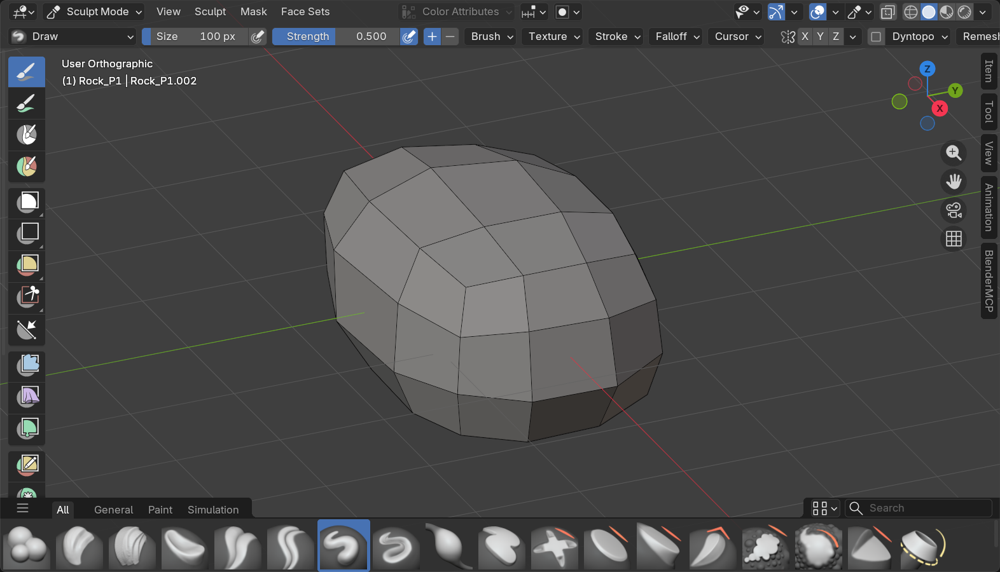
Phase 2: Block Basic Form (10 minutes)
- Grab brush (
G):- Large brush size
- Pull sphere into rough rock shape
- Make it irregular, asymmetric
- Don't worry about details yet
- Just establish overall mass
- Clay Strips (
C):- Medium brush size
- Build up planes and facets
- Rocks have planar surfaces, not smooth curves
- Create angular, crystalline feeling
- Vary brush size for different plane sizes
- Smooth (hold
Shift):- Blend between planes occasionally
- Not too much—rocks aren't perfectly smooth
- Just soften harsh transitions
- Rotate view constantly - work from all angles
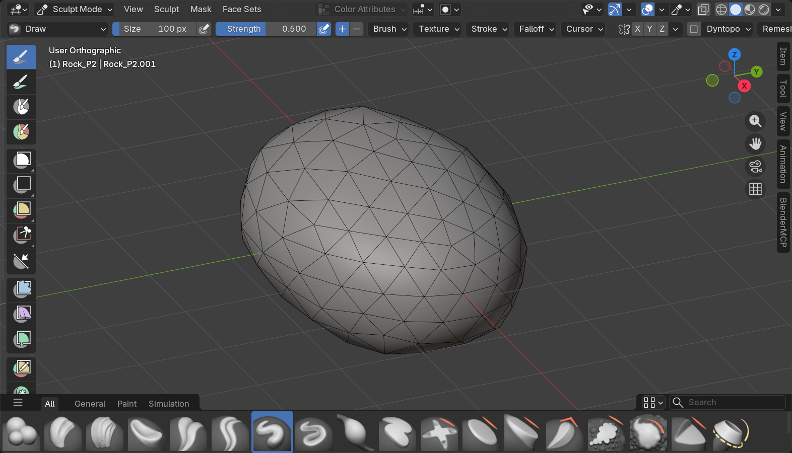
Phase 3: Add Character (15 minutes)
- Draw brush (
X):- Add lumps and bumps
- Create variety in surface
- Some areas bulge out, others recede
- Natural irregularity
- Crease brush:
- Add cracks and fissures
- Random placement (nature is chaotic)
- Vary depth and width
- Don't overdo—few strategic cracks better than many
- Scrape brush:
- Flatten some areas
- Create flat weathered surfaces
- Contrast with rounded areas
- Grab brush:
- Adjust overall form if needed
- Pull out interesting protrusions
- Push in concave areas
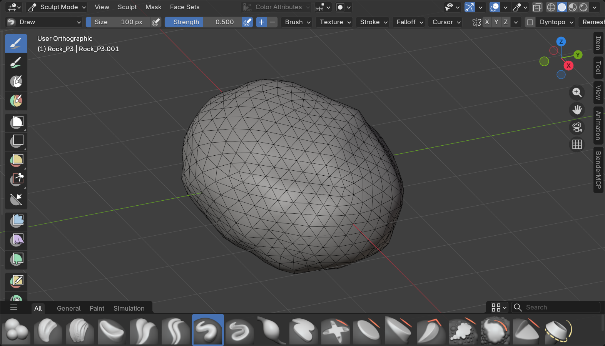
Phase 4: Surface Detail (10 minutes)
- Decrease Dyntopo detail to 8: Higher resolution for fine detail
- Draw brush (small size):
- Add small pits and pockmarks
- Weathering texture
- Random placement
- Draw Sharp brush:
- Add sharp crystalline edges
- Highlight interesting planes
- Create visual interest
- Smooth (hold Shift):
- Selectively smooth areas
- Some surfaces smooth, others rough
- Variation = realism
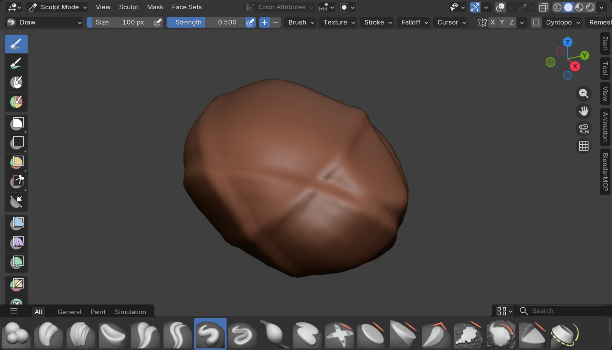
Phase 5: Final Polish (10 minutes)
- Zoom out—check overall silhouette
- Adjust major forms if needed (Grab brush)
- Add final accent details
- Smooth any overly harsh areas
- Rotate 360° to check all angles
- Done!
✅ Rock Success Criteria
- ✓ Asymmetric, irregular form (not sphere-like)
- ✓ Mix of planar and curved surfaces
- ✓ Some sharp edges, some smooth areas
- ✓ Cracks and surface texture present
- ✓ Interesting silhouette from multiple angles
- ✓ Looks like something from nature, not manufactured
Project Option B: Simple Creature Head
👾 Character Sculpting Introduction
Why creature head:
- Introduces character/anatomy concepts
- Symmetry practice
- More challenging than rock (anatomy considerations)
- Foundation for character work
- Portfolio-worthy when complete
Phase 1: Setup (5 minutes)
- New Blender file
- Delete cube, add UV Sphere
- Enter Sculpt Mode
- Shade Smooth
- Enable Dynamic Topology (
Ctrl+D) - Set detail to 12
- Enable X-axis symmetry (header: check X box)
- Critical for heads/faces
- Left side mirrors right side automatically
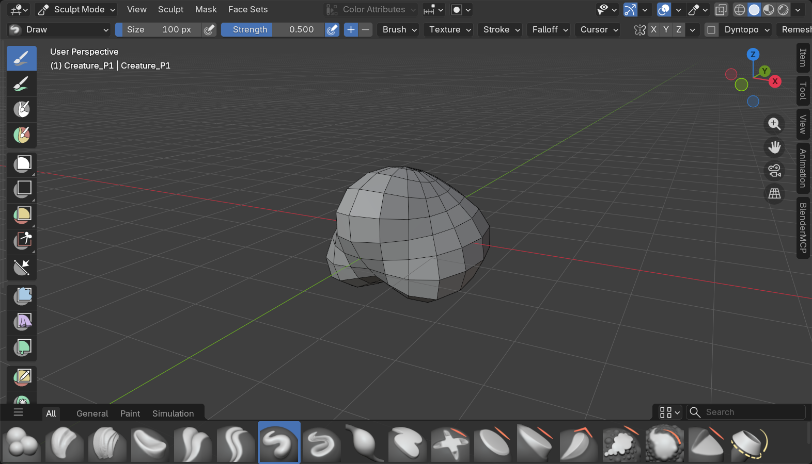
Phase 2: Basic Head Shape (15 minutes)
- Grab brush:
- Pull sphere into egg shape (head-like)
- Taper toward bottom (neck area)
- Slightly elongated front (snout/face)
- Work from front and side views
- Clay Strips:
- Build up brow ridge area
- Add volume to cheeks
- Define jaw area
- Create basic skull structure
- Draw brush:
- Push in eye sockets (Ctrl+click)
- Push in mouth area
- Create basic facial features placement
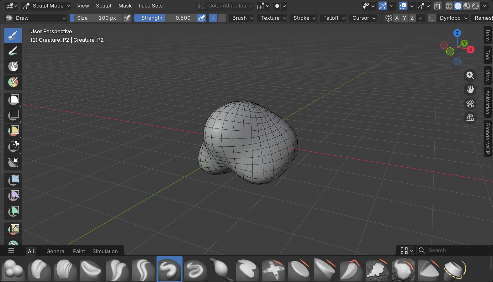
Phase 3: Features Placement (15 minutes)
- Eyes (use Inflate brush):
- Click in eye socket areas
- Create rounded eye bulges
- Position slightly above center of head
- Symmetry ensures both eyes match
- Nose/Snout (use Draw and Clay Strips):
- Build up center of face
- Can be small nose or large snout
- Your creature, your design
- Mouth (use Crease):
- Draw line where mouth opens
- Crease creates mouth line
- Can be simple line or complex opening
- Ears (optional):
- Use Draw to pull out ear shapes on sides
- Or leave smooth (alien/fish-like)
Phase 4: Character and Detail (20 minutes)
- Decrease Dyntopo detail to 8 (more resolution)
- Refine features:
- Define eyelids around eyes
- Add nostril indents if applicable
- Detail mouth area
- Smooth (Shift) to blend transitions
- Add surface interest:
- Scales (Draw Sharp, small size, repeated marks)
- Wrinkles (Crease brush, light touches)
- Texture variation (Draw, random pitting)
- Bone/ridge details (Clay Strips, sharp edges)
- Expression:
- Slight smile? (mouth corners up)
- Angry? (brow down, mouth corners down)
- Surprised? (eyes wide, mouth open)
- Even simple expression adds life
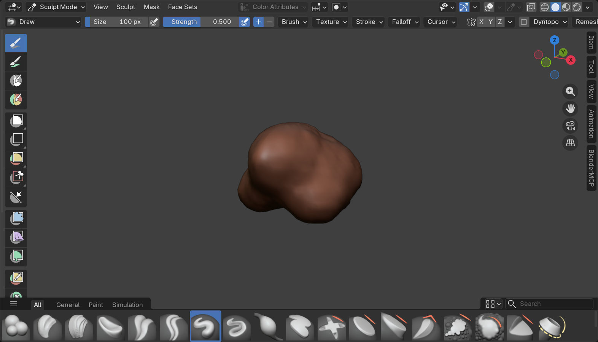
Phase 5: Final Pass (10 minutes)
- Zoom out frequently—check overall read
- Adjust major proportions if needed
- Add final accent details
- Smooth harsh areas
- Check symmetry is correct
- Rotate 360° to view all angles
✅ Creature Head Success Criteria
- ✓ Clearly identifiable as head/face
- ✓ Eyes, nose/snout, mouth visible
- ✓ Symmetry maintained (left/right match)
- ✓ Some character or personality evident
- ✓ Surface detail present (texture, features)
- ✓ Proportions feel believable
Project Option C: Decorative Vase
🏺 Controlled Form Practice
Why decorative vase:
- Practices symmetry extensively
- Controlled, deliberate forms
- Good for precision practice
- Combines organic and hard-surface elements
- Useful prop modeling skill
Phase 1: Setup (5 minutes)
- New Blender file
- Delete cube, add Cylinder (Shift+A → Mesh → Cylinder)
- Scale cylinder taller (S, Z, 3 to scale 3x on Z-axis)
- Enter Sculpt Mode
- Shade Smooth
- Enable Dynamic Topology
- Detail: 12
- Enable both X and Y symmetry (radial symmetry effect)
Phase 2: Basic Vase Shape (15 minutes)
- Grab brush:
- Narrow neck area (top third)
- Widen body area (middle)
- Narrow base slightly
- Create classic vase profile
- Work from side view primarily
- Inflate brush:
- Expand body to create volume
- Round curves naturally
- Smooth, elegant form
- Smooth (Shift):
- Blend all transitions
- Vases should be smooth, graceful
- No harsh edges on body
Phase 3: Add Decorative Elements (20 minutes)
- Draw Sharp brush:
- Create bands around vase
- Raised ridges for decoration
- Symmetry creates perfect circles
- Crease brush:
- Add grooves between bands
- Decorative line work
- Pattern details
- Clay Strips:
- Add handles on sides (turn OFF symmetry for this)
- Build up decorative elements
- Feet/base details
- Decrease detail to 8:
- Add fine surface ornamentation
- Floral patterns (small Draw strokes)
- Geometric designs
Phase 4: Refinement (15 minutes)
- Smooth all harsh transitions
- Ensure symmetry is perfect
- Refine decorative elements
- Add rim detail at top
- Base detail at bottom
- Final surface texture if desired
✅ Vase Success Criteria
- ✓ Clear vase form (neck, body, base)
- ✓ Smooth, graceful curves
- ✓ Symmetry perfect throughout
- ✓ Decorative elements present
- ✓ Professional, refined appearance
- ✓ Could believably hold flowers
After Completing Your Sculpt
🎨 Presentation and Next Steps
Setting up presentation:
- Better viewport shading:
- Viewport shading → Solid mode
- Enable MatCap
- Choose appealing matcap (clay, gold, etc.)
- Shows form beautifully
- Add lighting (optional):
- Switch to Shading workspace
- Add simple material
- Add sun lamp for shadows
- Render for presentation image
- Save your work:
- File → Save As
- Descriptive name: "first_sculpt_rock_v01.blend"
- Keep version numbers for practice pieces
What you learned:
- ✅ Complete sculpting workflow (setup to finish)
- ✅ Essential brush usage in practice
- ✅ Resolution management with Dyntopo
- ✅ Working from rough to refined
- ✅ Symmetry for controlled forms
- ✅ Surface detail techniques
Next challenges:
- Create second sculpt (different project option)
- Try same project with Multiresolution instead of Dyntopo
- Experiment with more specialty brushes
- Follow reference photo (sculpt real rock or object)
- Combine multiple sculpts in scene
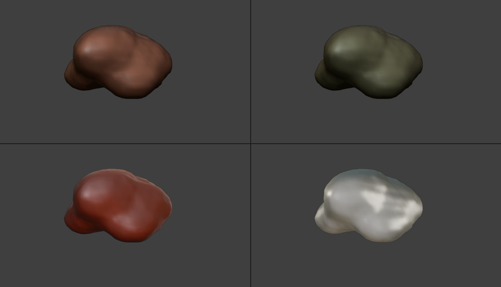
⚠️ Common Project Issues
"My sculpt looks lumpy and uneven"
- Use Smooth brush (Shift) more frequently
- Lower brush strength (build up gradually)
- Use Clay Strips for more controlled forms
"Details aren't showing up"
- Decrease Dyntopo detail size (more resolution)
- Make brush smaller for fine details
- Increase brush strength slightly
"Symmetry not working"
- Check symmetry checkbox in header (X, Y, or Z)
- Verify object origin is centered
- May need to apply transformations (Object Mode → Ctrl+A → All Transforms)
"Blender is lagging"
- Increase Dyntopo detail size (lower resolution)
- Too many polygons for your computer
- Save and restart Blender
"Lost my forms/went too far"
- Undo (Ctrl+Z) - can undo many steps
- Or start over—it's practice
- Second attempt always better than first
💡 Your First Sculpt Is a Milestone: Not because it's perfect. It probably isn't. Your rock might look lumpy. Your creature head might look strange. Your vase might be asymmetric despite your best efforts. That's okay. That's normal. That's exactly how it should be. Because you finished it. You went from sphere to something recognizable. You used brushes. You managed resolution. You completed a workflow. That's not nothing. That's everything. Every professional sculptor has a terrible first sculpt in their history. The difference between them and people who quit? They made a second sculpt. Then a third. Then a hundredth. Each one slightly better. You just made your first. Congratulations. Now make your second.
🎯 Lesson Summary
You've completed your introduction to digital sculpting in Blender. You've learned a completely new way of creating 3D forms—intuitive, artistic, and powerful. Let's review everything you've accomplished and map out your continued sculpting journey.
🎓 What You've Mastered
Core concepts:
- ✅ Digital sculpting fundamentals (clay metaphor, mesh manipulation)
- ✅ When to sculpt vs. polygon model (decision framework)
- ✅ Sculpt Mode interface and navigation
- ✅ Eight essential sculpting brushes and their applications
- ✅ Resolution management (Dyntopo, Multiresolution, Remeshing)
- ✅ Complete sculpting workflow (rough to refined)
Technical skills:
- ✅ Brush shortcuts and modifiers (F, Shift+F, Ctrl, Shift)
- ✅ Dynamic Topology setup and usage
- ✅ Symmetry for controlled sculpting
- ✅ Surface smoothing and blending
- ✅ Form building and refinement
- ✅ Detail layering techniques
Hands-on experience:
- ✅ Completed full sculpt from start to finish
- ✅ Applied multiple brushes in context
- ✅ Managed resolution throughout workflow
- ✅ Created presentable, finished piece
Key Takeaways
💎 Essential Lessons
Sculpting is intuitive but requires practice:
- Interface is simple—click and drag
- But mastery takes time and repetition
- Muscle memory develops through volume of work
- First sculpts always rough—improvement comes with practice
Use the right tool for the job:
- Sculpting excels at organic forms and surface detail
- Polygon modeling better for hard-surface objects
- Combine methods for best results
- Don't force wrong tool for the task
Resolution management is crucial:
- Start low resolution (rough forms)
- Increase progressively (add detail gradually)
- Never add detail to low-resolution mesh
- Match resolution to current task
Master the core brushes first:
- Eight essential brushes handle 95% of sculpting
- Draw, Grab, Smooth most frequently used
- Shortcuts critical for fluid workflow
- Specialty brushes come later
Work from big to small:
- Block major forms first
- Refine secondary forms
- Add details last
- This order prevents wasted effort
Rotate and review constantly:
- Work from all angles
- Zoom in for detail, zoom out for form
- Check silhouette frequently
- Prevents flat, unconvincing sculpts
Common Beginner Mistakes to Avoid
⚠️ Learn from Others' Mistakes
Adding detail too early:
- Sculpting wrinkles before face is shaped
- Adding scales before creature form is established
- Solution: Block all major forms FIRST, details LAST
Working at wrong resolution:
- Trying to add fine detail at low resolution (looks faceted)
- Starting at maximum resolution (computer lags)
- Solution: Match resolution to task, increase gradually
Using too much strength:
- Brush at 100% strength creates lumpy surfaces
- Overworking areas leads to mushy forms
- Solution: Lower strength (0.3-0.6), build up gradually
Not using Smooth brush enough:
- Surfaces become overly textured and noisy
- Forms lack refinement
- Solution: Hold Shift constantly, smooth as you go
Ignoring symmetry:
- Character faces come out lopsided
- Symmetrical objects become asymmetric
- Solution: Enable X-symmetry for faces/heads/symmetrical forms
Working from one angle:
- Sculpt looks good from front but flat from side
- Proportions wrong in 3D space
- Solution: Rotate view every few strokes, check all angles
Perfectionism paralysis:
- Overworking single area endlessly
- Never moving forward or finishing
- Solution: Work whole sculpt to same level, refine overall
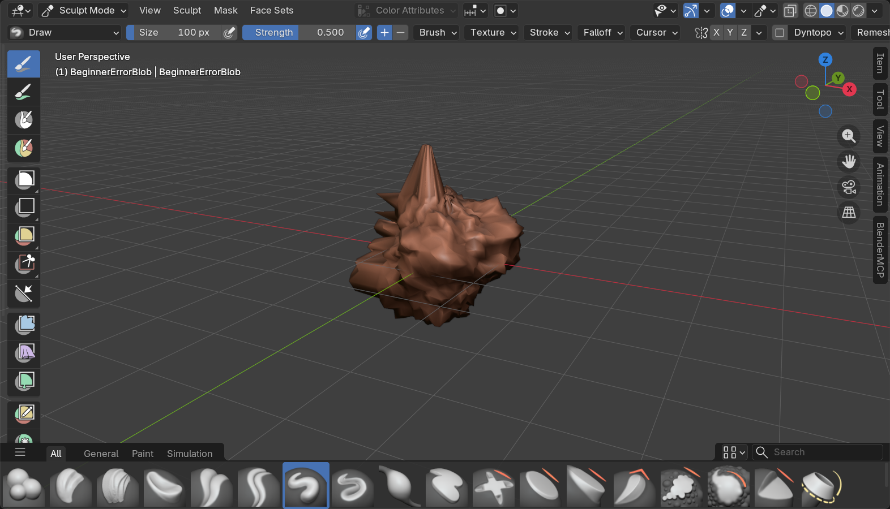
Next Steps in Your Sculpting Journey
🚀 Continuing Your Progress
Immediate practice (this week):
- Create 3-5 more simple sculpts
- Different rocks with varied textures
- Simple creature heads (different species)
- Objects from daily life (fruit, tools)
- Focus on brush fluency
- Memorize shortcuts (X, G, S, C)
- Practice switching brushes quickly
- Build muscle memory
- Experiment with settings
- Try different Dyntopo detail sizes
- Test Multiresolution workflow
- Compare Remesh results
Short-term goals (next month):
- Create 10-15 completed sculpts (volume builds skill)
- Try specialty brushes (Pinch, Clay, Blob)
- Sculpt from reference images (real objects/creatures)
- Learn basic anatomy (muscles, bone structure)
- Explore advanced Multiresolution workflows
- Combine sculpting with polygon modeling
Medium-term goals (3-6 months):
- Complete character bust (head, neck, shoulders)
- Learn retopology (clean mesh over sculpt)
- Bake sculpt details to normal maps
- Create environment asset pack (rocks, trees, props)
- Study traditional sculpture principles
- Build sculpting portfolio (5-10 strong pieces)
Advanced topics to explore:
- Full character creation workflow
- Creature design and concept sculpting
- Hard-surface detailing with sculpting
- Cloth and fabric sculpting
- Stylized vs. realistic sculpting approaches
- Professional pipeline integration
Learning Resources
📚 Where to Learn More
Blender-specific resources:
- Blender Manual: Official sculpting documentation
- Blender Cloud: Professional sculpting tutorials and assets
- YouTube channels: YanSculpts, Julien Kaspar, Grant Abbitt
- FlippedNormals: Industry-level sculpting courses
General sculpting knowledge:
- Books: Anatomy for Sculptors (detailed human anatomy)
- ZBrush tutorials: Techniques transfer to Blender
- Traditional sculpture: Principles apply to digital
- Figure drawing: Understanding form helps sculpting
Communities for feedback:
- BlenderArtists.org (focused sculpting forum)
- Reddit r/blender (active, helpful community)
- ArtStation (professional portfolio feedback)
- Discord servers (real-time discussion)
Reference resources:
- 3D.sk: High-quality photo reference
- Pinterest: Creature design inspiration
- Museum collections: Traditional sculpture study
- Nature photography: Organic forms and textures
Sculpting in Your Blender Workflow
🔄 Integrating Sculpting
Sculpting fits into larger pipeline:
- Concept/Design: Sculpt to explore forms quickly
- High-detail creation: Sculpt for detail that's hard to model
- Retopology: Create clean mesh over sculpt
- Baking: Transfer sculpt detail to textures
- Production: Use low-poly with baked details
Upcoming lessons will cover:
- Lesson 29: Hard Surface Modeling - Complement to sculpting
- Lesson 30: Retopology Fundamentals - Clean up sculpts
- Lesson 36-39: Character Creation - Full character workflow
- Each builds on sculpting foundation you have now
How sculpting enhances other skills:
- Better understanding of form and volume
- Improved modeling decisions (knowing end result)
- Texture creation (sculpted detail → normal maps)
- Concept visualization (3D sketching)
- Overall 3D spatial awareness
Final Thoughts
🎨 You're a Digital Sculptor Now
You've crossed a significant threshold. You understand sculpting fundamentals. You can use the essential brushes. You know how to manage resolution. You've completed a sculpt from start to finish.
Is your first sculpt perfect? Probably not. Does it matter? Not at all. Because you finished it. You took formless geometry and shaped it into something recognizable. That's not a small thing. That's creation.
Traditional sculptors spend years mastering their craft. Digital sculpting is no different. The tools are different. The medium is different. But the core skill—understanding form, volume, gesture, flow—that takes time to develop. Takes practice. Takes patience.
You have the foundation now. The rest is mileage. Every sculpt you create makes you better. Every hour you spend shaping digital clay teaches you something new. Some sculpts will come out great. Others will look weird. Both are valuable. Both are practice.
The professionals you admire? They started exactly where you are now. Struggling with lumpy forms. Fighting with resolution. Wondering if they'd ever "get it." The only difference between them and beginners who quit? They kept sculpting.
Welcome to the world of digital sculpting. Now go make something beautiful.
💡 The Sculpting Journey: Sculpting isn't about creating perfect art immediately. It's about developing a relationship with form. Learning how shapes interact. Understanding how light reveals volume. Feeling when something is "right" versus when it needs more work. These aren't skills you learn from a lesson. They're skills you develop through hundreds of hours of practice. But here's the secret: practice doesn't feel like work when you love what you're creating. So don't chase perfection. Chase interesting. Chase weird. Chase expressive. Chase whatever makes you excited to open Blender and start shaping. Because excitement sustains practice. And practice creates mastery.